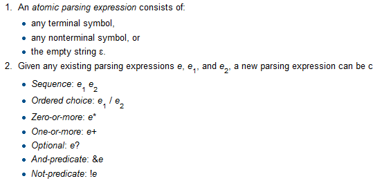

Peggy:
新しい時代のパーザジェネレータ
田中英行 tanaka.hideyuki@gmail.com
2011-12-16 @ Haskell忘年会
田中英行 tanaka.hideyuki@gmail.com
2011-12-16 @ Haskell忘年会
形式言語の文法表現の一つ
CFGに似ているが、CFGとは違う

-- Peggy QuasiQuoter
[peggy|
parens :: Int -- パーザの型
= "(" parens ")" { $1 + 1 } -- 定義
/ "" { 0 }
hoge :: String = "aiueo" -- 空白・改行は意味を持たない
foo :: ()
= ("abc" / "def") "ghi" -- 任意の式を括弧で囲える
|]
-- main routine
main :: IO ()
main = print . parseString parens "<stdin>" =<< getContentsidentChar :: Char = [_a-zA-Z0-9]ident0 :: String = identChar*
ident1 :: String = identChar+mbident :: Maybe String = ident?number :: Int = [0-9]+ { read $1 }foo :: String = !number ident -- 否定
bar :: String = &ident ident -- 肯定forStmt :: Stmt
= "for" "(" expr? ";" expr? ";" expr? ")" stmt
{ ForStmt $1 $2 $3 $4 }forStmt :: Stmt
= "for" "(" init:expr? ";" cond:expr? ";" post:expr? ")" "{" body:stmt* "}"
{ ForStmt init cond post body }args :: [Expr]
= (expr, ",") -- 0 回以上
args1 :: [Expr]
= (expr; ",") -- 1 回以上token :: String = "hoge" -- トークンnumber ::: Int
= [0-9]+ { read $1 }exp :: Double
= exp "+" fact { $1 + $2 }
/ exp "-" fact { $1 - $2 }
/ fact
fact :: Double
= fact "*" term { $1 * $2 }
/ fact "/" term { $1 / $2 }
/ term
term :: Double
= "(" exp ")"
/ number
number ::: Double
= ([1-9][0-9]*) { read $1 }program :: ()
= (!"/*" !"*/" . { () } / comment)* !. { () }
comment :: ()
= "/*" commentElem* "*/" { () }
commentElem :: ()
= comment
/ !"*/" . { () }これがflexとかだと意外と難しい
tensor :: Exp
= ident '_' ident { $$1 !! $$2 }
ident :: String
= [a-z]+ { $1 }main :: IO ()
main = do
let x = [1, 2, 3]
i = 1
print [tensor|x_i|]レポジトリの example ディレクトリに色々あります
$ cabal update
$ cabal install peggy